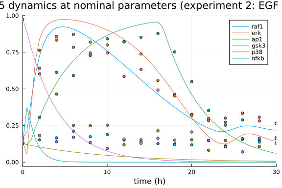
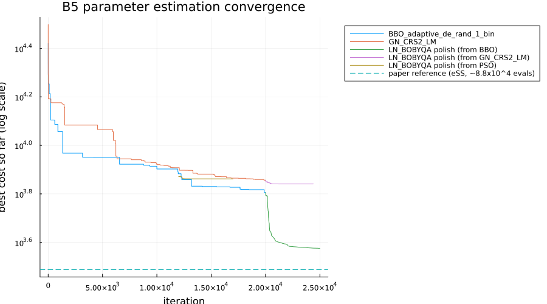
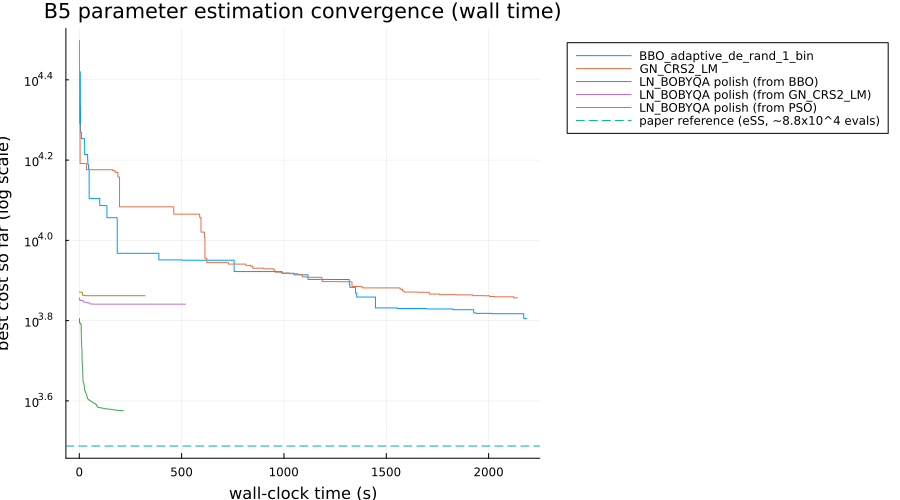

BioPreDyn-bench B5 (EGF/TNFα Signal Transduction Logic Model) Parameter Estimation Benchmark
Parameter estimation of a logic-based ODE model of EGF/TNFα signal transduction
This benchmark implements problem B5 from the BioPreDyn-bench suite (Villaverde et al. 2015), addressing SciMLBenchmarks.jl#555. B5 is a logic-based ODE model (Wittmann et al. 2009's continuous relaxation of a Boolean network) of signal transduction downstream of EGF and TNFα stimulation: 26 states, each a normalized (0-1) protein activity level, connected by 26 Hill-function-gated edges (some combined pairwise with AND/OR logic), with 86 unknown parameters (Hill coefficients n, half-activation constants k, and activation/deactivation time constants τ). Like B4 and unlike B2, B5 fits simulated pseudo-data rather than real measurements: 10 in silico experiments combining different stimuli (EGF, TNFα) and inhibitors (of PI3K, Raf1), with 6 observed states per experiment at 16 time points each, and noise of constant standard deviation 0.05 added by the benchmark's authors. The benchmark also ships a "nominal" parameter vector, which the reference files describe only as a set of nominal or best-known parameters; as shown below, it does not reproduce this data to within the stated noise level under this model and initial-condition convention, so it is a useful point of comparison rather than the exact parameters that generated the data.
The model equations, nominal parameters, parameter bounds, and simulated data below are transcribed directly from the benchmark's official AMIGO2/C implementation, available as supplementary material to the paper (Additional files 2-3, directory BioPreDynBenchFiles/B5, file logic.c).
using OrdinaryDiffEq, Optimization, ForwardDiff
using OptimizationBBO, OptimizationNLopt, Plots, BenchmarkTools, DataFrames
using ParallelParticleSwarms
gr(fmt = :png)Plots.GRBackend()Model
States: nik, mkk4, ask1, map3k7, mkk7, tnfr, egfr, ph, ex, mek, ras, traf2, ikk, akt, pi3k, ikb, nfkb, cjun, jnk, map3k1, erk, raf1, sos, p38, gsk3, ap1 – each a normalized activity level for the corresponding kinase, transcription factor, or adaptor protein in the EGF/TNFα signaling network. Each state X relaxes toward a combination of upstream Hill-function inputs at rate τ_X:
dX/dt = (input combination - X) * τ_Xwhere the "input combination" for a state driven by a single upstream node Y is simply w * fhill(Y, n, k) (w a fixed 0/1 edge weight – see below), and for the four states driven by two upstream nodes it is a weighted combination allowing that pair to act as an AND gate, an OR gate, or independently, via the identity OR(w1, w2, w3) below (a multilinear extension of the 3-input logical OR, evaluated at the edges' fixed 0/1 weights). Two states (pi3k, raf1) are additionally scaled by (1 - inhibitor), since their experiments include a PI3K or Raf1 inhibitor treatment.
fhill(x, n, k) = begin
xp = max(x, 0.0)^n
kp = k^n
(xp / (kp + xp)) * (1 + kp)
end
# the multilinear extension of "x1 OR x2 OR x3" -- reduces to ordinary OR at x_i in {0, 1},
# used here to combine two upstream edges' fixed weights into the third (AND-gate) weight.
or3(x1, x2, x3) = (
(1 - x1) * (1 - x2) * (x3) +
(1 - x1) * (x2) * (1 - x3) +
(1 - x1) * (x2) * (x3) +
(x1) * (1 - x2) * (1 - x3) +
(x1) * (1 - x2) * (x3) +
(x1) * (x2) * (1 - x3) +
(x1) * (x2) * (x3)
)
# 34 fixed (not estimated) 0/1 edge weights, in the order the reference C source declares
# them, encoding which edges/AND-combinations are active in this particular network
# topology.
const b5_weights = Float64[
1, 0, 0, 1, 1, 1, 1, 1, 0, 1, 1, 1, 1, 1, 1, 1, 1, 1, 1, 1, 1, 0, 1, 1, 1, 1, 1, 1, 0,
0, 1, 1, 1, 1]
function b5_kinetics!(du, u, p, t)
nik, mkk4, ask1, map3k7, mkk7, tnfr, egfr, ph, ex, mek, ras, traf2, ikk, akt, pi3k,
ikb, nfkb, cjun, jnk, map3k1, erk, raf1, sos, p38, gsk3, ap1 = u
egf, tnfa, pi3k_inhib, raf1_inhib = p[87], p[88], p[89], p[90]
(map3k7_n_nik, map3k7_k_nik, tau_nik, map3k7_n_mkk4, map3k7_k_mkk4, map3k1_n_mkk4,
map3k1_k_mkk4, tau_mkk4, traf2_n_ask1, traf2_k_ask1, tau_ask1, traf2_n_map3k7,
traf2_k_map3k7, tau_map3k7, ask1_n_mkk7, ask1_k_mkk7, map3k1_n_mkk7, map3k1_k_mkk7,
tau_mkk7, tnfa_n_tnfr, tnfa_k_tnfr, tau_tnfr, egf_n_egfr, egf_k_egfr, tau_egfr,
erk_n_ph, erk_k_ph, tau_ph, nfkb_n_ex, nfkb_k_ex, tau_ex, raf1_n_mek, raf1_k_mek,
tau_mek, sos_n_ras, sos_k_ras, tau_ras, tnfr_n_traf2, tnfr_k_traf2, tau_traf2,
nik_n_ikk, nik_k_ikk, tau_ikk, pi3k_n_akt, pi3k_k_akt, tau_akt, egfr_n_pi3k,
egfr_k_pi3k, tau_pi3k, ex_n_ikb, ex_k_ikb, ikk_n_ikb, ikk_k_ikb, tau_ikb, ikb_n_nfkb,
ikb_k_nfkb, tau_nfkb, jnk_n_cjun, jnk_k_cjun, tau_cjun, mkk7_n_jnk, mkk7_k_jnk,
tau_jnk, ras_n_map3k1, ras_k_map3k1, tau_map3k1, mek_n_erk, mek_k_erk, tau_erk,
ras_n_raf1, ras_k_raf1, tau_raf1, egfr_n_sos, egfr_k_sos, ph_n_sos, ph_k_sos, tau_sos,
mkk4_n_p38, mkk4_k_p38, tau_p38, akt_n_gsk3, akt_k_gsk3, tau_gsk3, cjun_n_ap1,
cjun_k_ap1, tau_ap1) = p[1:86]
(map3k7_nik_w, map3k7_mkk4_w, map3k1_mkk4_w, map3k7_map3k1_mkk4_and_w, traf2_ask1_w,
traf2_map3k7_w, ask1_mkk7_w, map3k1_mkk7_w, ask1_map3k1_mkk7_and_w, tnfa_tnfr_w,
egf_egfr_w, erk_ph_w, nfkb_ex_w, raf1_mek_w, sos_ras_w, tnfr_traf2_w, nik_ikk_w,
pi3k_akt_w, egfr_pi3k_w, ex_ikb_w, ikk_ikb_w, ex_ikk_ikb_and_w, ikb_nfkb_w,
jnk_cjun_w, mkk7_jnk_w, ras_map3k1_w, mek_erk_w, ras_raf1_w, egfr_sos_w, ph_sos_w,
egfr_ph_sos_and_w, mkk4_p38_w, akt_gsk3_w, cjun_ap1_w) = b5_weights
du[1] = (map3k7_nik_w * fhill(map3k7, map3k7_n_nik, map3k7_k_nik) - nik) * tau_nik
f_map3k7_mkk4 = fhill(map3k7, map3k7_n_mkk4, map3k7_k_mkk4)
f_map3k1_mkk4 = fhill(map3k1, map3k1_n_mkk4, map3k1_k_mkk4)
du[2] = (map3k1_mkk4_w * (1 - f_map3k7_mkk4) * f_map3k1_mkk4 +
map3k7_mkk4_w * f_map3k7_mkk4 * (1 - f_map3k1_mkk4) +
or3(map3k7_mkk4_w, map3k1_mkk4_w, map3k7_map3k1_mkk4_and_w) * f_map3k7_mkk4 *
f_map3k1_mkk4 - mkk4) * tau_mkk4
du[3] = (traf2_ask1_w * fhill(traf2, traf2_n_ask1, traf2_k_ask1) - ask1) * tau_ask1
du[4] = (traf2_map3k7_w * fhill(traf2, traf2_n_map3k7, traf2_k_map3k7) - map3k7) *
tau_map3k7
f_ask1_mkk7 = fhill(ask1, ask1_n_mkk7, ask1_k_mkk7)
f_map3k1_mkk7 = fhill(map3k1, map3k1_n_mkk7, map3k1_k_mkk7)
du[5] = (map3k1_mkk7_w * (1 - f_ask1_mkk7) * f_map3k1_mkk7 +
ask1_mkk7_w * f_ask1_mkk7 * (1 - f_map3k1_mkk7) +
or3(ask1_mkk7_w, map3k1_mkk7_w, ask1_map3k1_mkk7_and_w) * f_ask1_mkk7 *
f_map3k1_mkk7 - mkk7) * tau_mkk7
du[6] = (tnfa_tnfr_w * fhill(tnfa, tnfa_n_tnfr, tnfa_k_tnfr) - tnfr) * tau_tnfr
du[7] = (egf_egfr_w * fhill(egf, egf_n_egfr, egf_k_egfr) - egfr) * tau_egfr
du[8] = (erk_ph_w * fhill(erk, erk_n_ph, erk_k_ph) - ph) * tau_ph
du[9] = (nfkb_ex_w * fhill(nfkb, nfkb_n_ex, nfkb_k_ex) - ex) * tau_ex
du[10] = (raf1_mek_w * fhill(raf1, raf1_n_mek, raf1_k_mek) - mek) * tau_mek
du[11] = (sos_ras_w * fhill(sos, sos_n_ras, sos_k_ras) - ras) * tau_ras
du[12] = (tnfr_traf2_w * fhill(tnfr, tnfr_n_traf2, tnfr_k_traf2) - traf2) * tau_traf2
du[13] = (nik_ikk_w * fhill(nik, nik_n_ikk, nik_k_ikk) - ikk) * tau_ikk
du[14] = (pi3k_akt_w * fhill(pi3k, pi3k_n_akt, pi3k_k_akt) - akt) * tau_akt
du[15] = (egfr_pi3k_w * fhill(egfr, egfr_n_pi3k, egfr_k_pi3k) - pi3k) * tau_pi3k *
(1 - pi3k_inhib)
f_ex_ikb = fhill(ex, ex_n_ikb, ex_k_ikb)
f_ikk_ikb = fhill(ikk, ikk_n_ikb, ikk_k_ikb)
du[16] = (ikk_ikb_w * (1 - f_ex_ikb) * (1 - f_ikk_ikb) +
or3(ex_ikb_w, ikk_ikb_w, ex_ikk_ikb_and_w) * f_ex_ikb * (1 - f_ikk_ikb) +
ex_ikb_w * f_ex_ikb * f_ikk_ikb - ikb) * tau_ikb
du[17] = (ikb_nfkb_w * (1 - fhill(ikb, ikb_n_nfkb, ikb_k_nfkb)) - nfkb) * tau_nfkb
du[18] = (jnk_cjun_w * fhill(jnk, jnk_n_cjun, jnk_k_cjun) - cjun) * tau_cjun
du[19] = (mkk7_jnk_w * fhill(mkk7, mkk7_n_jnk, mkk7_k_jnk) - jnk) * tau_jnk
du[20] = (ras_map3k1_w * fhill(ras, ras_n_map3k1, ras_k_map3k1) - map3k1) * tau_map3k1
du[21] = (mek_erk_w * fhill(mek, mek_n_erk, mek_k_erk) - erk) * tau_erk
du[22] = (ras_raf1_w * fhill(ras, ras_n_raf1, ras_k_raf1) - raf1) * tau_raf1 *
(1 - raf1_inhib)
f_egfr_sos = fhill(egfr, egfr_n_sos, egfr_k_sos)
f_ph_sos = fhill(ph, ph_n_sos, ph_k_sos)
du[23] = (ph_sos_w * (1 - f_egfr_sos) * (1 - f_ph_sos) +
or3(egfr_sos_w, ph_sos_w, egfr_ph_sos_and_w) * f_egfr_sos * (1 - f_ph_sos) +
egfr_sos_w * f_egfr_sos * f_ph_sos - sos) * tau_sos
du[24] = (mkk4_p38_w * fhill(mkk4, mkk4_n_p38, mkk4_k_p38) - p38) * tau_p38
du[25] = (akt_gsk3_w * (1 - fhill(akt, akt_n_gsk3, akt_k_gsk3)) - gsk3) * tau_gsk3
du[26] = (cjun_ap1_w * fhill(cjun, cjun_n_ap1, cjun_k_ap1) - ap1) * tau_ap1
nothing
endb5_kinetics! (generic function with 1 method)Nominal parameters, bounds, and starting guess
The 86 estimated parameters are, for each of the 26 network edges (or edge pairs): a Hill coefficient n, a half-activation constant k, and (once per state) a relaxation rate τ.
p_nom = [
1.0, 0.0905, 7.1398, 1.09, 0.95, 3.1526, 0.4721, 5.4167, 3.4873, 0.15, 5.2731, 1.0,
0.0918, 0.1, 3.5966, 0.7772, 3.9788, 0.4026, 10.0, 1.0188, 0.1173, 9.1369, 4.892,
0.0905, 1.0937, 4.611, 0.1027, 0.106, 4.9909, 0.4268, 0.6146, 1.4875, 0.5195, 9.5228,
1.454, 0.7119, 2.8385, 4.1622, 0.5476, 9.9362, 4.997, 0.1029, 5.7463, 1.0726, 0.9486,
9.5917, 4.4151, 0.0944, 7.7292, 4.9991, 0.6852, 1.5451, 0.95, 0.6778, 4.9997, 0.2329,
0.9984, 1.0759, 0.9496, 9.6513, 4.8747, 0.0913, 1.3215, 1.1997, 0.8298, 9.995, 2.5354,
0.7099, 10.0, 1.0, 0.2725, 0.8552, 1.0012, 0.9375, 1.4651, 0.72, 9.3196, 1.0032,
0.9329, 0.1, 1.0608, 0.09, 0.2602, 4.7985, 0.2653, 0.2045]
# Each of the 26 states above has its own Hill coefficient(s) `n`, half-activation
# constant(s) `k`, and time constant `τ`, in that order -- except the 4 states driven by
# *two* upstream inputs (mkk4, mkk7, ikb, sos), which have two (n, k) pairs before their
# single shared `τ` (22*3 + 4*5 = 86 parameters total, matching `p_nom` above). Bounds are
# `n ∈ [1, 5]`, `k ∈ [0.09, 0.95]`, `τ ∈ [0.1, 10]` throughout.
p_group_sizes = [3, 5, 3, 3, 5, 3, 3, 3, 3, 3, 3, 3, 3, 3, 3, 5, 3, 3, 3, 3, 3, 3, 5, 3, 3, 3]
p_kind = Symbol[]
for s in p_group_sizes
append!(p_kind, s == 3 ? [:n, :k, :tau] : [:n, :k, :n, :k, :tau])
end
p_bound(kind) = kind == :n ? (1.0, 5.0) : kind == :k ? (0.09, 0.95) : (0.1, 10.0)
p_lower = [p_bound(k)[1] for k in p_kind]
p_upper = [p_bound(k)[2] for k in p_kind]
# a fixed starting guess distinct from the reference nominal parameters, taken directly
# from the benchmark's own `b5_bounds.mat` (its reference implementation instead draws a
# fresh random point on every run, and explicitly warns against starting from `p_nom`).
p_start = [
1.184759262504215, 0.21459526213964114, 0.10809675459912715, 1.6087933663141603,
0.22442269369853485, 1.019018881887606, 0.24562113186152565, 1.6386831960653867,
1.6601979847270953, 0.12698536389878953, 0.8726694828555555, 1.4380416332737789,
0.24450593528121173, 1.4973541296563362, 1.0281802502122304, 0.1465067088805043,
1.668424789067315, 0.15472186789284803, 1.5800852385647437, 1.1365014776441786,
0.16738454052863982, 0.6960904852634554, 1.1933207695986574, 0.12122999565205861,
1.5897189652907575, 1.6916372384011373, 0.12029528657665965, 0.16593017503091972,
1.5304276348688823, 0.16396528247241732, 1.7845946178128782, 1.7470582389009048,
0.14068101171134623, 0.8502236697061625, 1.3125734528021464, 0.1779957815743794,
2.0384987365033926, 1.4924780101762498, 0.2336057169741878, 0.24262607206563602,
1.4131367766257956, 0.1753544567467018, 0.884204079803919, 1.0115079753833303,
0.2327450142121817, 1.3530328090725565, 1.1007169158996126, 0.11536043167535977,
1.132835638273184, 1.2000239851886938, 0.15544822737696648, 1.1685461184870811,
0.23349343692989427, 0.5366886492920943, 1.3085144088248555, 0.16489424979614795,
1.1011323545609621, 1.170089828707995, 0.20885756201586309, 1.6589054956445395,
1.060994893088602, 0.11106923645820793, 1.146829818287243, 1.3904947922005968,
0.11180998657080976, 1.684108192301219, 1.2855285514404726, 0.2535098060289728,
0.7974092835369448, 1.5507152895412024, 0.23813580961053765, 1.3088000450509263,
1.2813449574659153, 0.24859774428717346, 1.6017989822517902, 0.19119011092231275,
1.8264245140186641, 1.352446601974608, 0.11886281837067784, 1.9061463162128867,
1.182809556202296, 0.13619634602572558, 0.5419638194069124, 1.3066363835999548,
0.10757536015432018, 0.8643218724224818]86-element Vector{Float64}:
1.184759262504215
0.21459526213964114
0.10809675459912715
1.6087933663141603
0.22442269369853485
1.019018881887606
0.24562113186152565
1.6386831960653867
1.6601979847270953
0.12698536389878953
⋮
1.352446601974608
0.11886281837067784
1.9061463162128867
1.182809556202296
0.13619634602572558
0.5419638194069124
1.3066363835999548
0.10757536015432018
0.8643218724224818Simulated experiments
10 in silico experiments combine EGF/TNFα stimulation with PI3K/Raf1 inhibition; 6 of the 26 states (raf1, erk, ap1, gsk3, p38, nfkb) are observed at 16 equidistant time points, with noise of constant standard deviation 0.05 (the reference files specify only this homoscedastic value, noise_type = 'homo_var', since all states are normalized to [0, 1]) added on top of the underlying simulation. Each experiment's initial condition sets its 6 observed states to their own (noised) value at t = 0 and leaves the other 20 states at 0, matching the reference implementation.
# columns: egf, tnfa, pi3k_inhib, raf1_inhib
b5_controls = [
0 0 0 0
1 0 0 0
0 1 0 0
1 1 0 0
1 0 1 0
0 1 1 0
1 1 1 0
1 0 0 1
0 1 0 1
1 1 0 1]
b5_obs_idx = [22, 21, 26, 25, 24, 17] # raf1, erk, ap1, gsk3, p38, nfkb
b5_times = collect(0.0:2.0:30.0)
b5_data = Matrix{Float64}[
[0.11327346 0.15762948 0.16568655 0.9004708 0.10767257 0.1355827
0.19829967 0.14064558 0.17512615 0.9041830 0.09441348 0.2145996
0.09299877 0.06633699 0.10856162 0.9375022 0.14480097 0.1825351
0.12164888 0.11327575 0.15403017 0.9622286 0.10224031 0.1371931
0.21959824 0.17236626 0.22072767 0.8919632 0.13063334 0.1498756
0.15472042 0.12708298 0.11575208 0.8979801 0.22518701 0.1550437
0.11013992 0.11169585 0.16922386 0.8078341 0.10325274 0.1670639
0.18678235 0.05988388 0.12707947 0.8855724 0.11136211 0.1085992
0.11089965 0.14960227 0.00000000 0.9211519 0.09265214 0.1506382
0.13010459 0.05472079 0.14316334 0.8873765 0.15153122 0.1567842
0.12903695 0.12898450 0.13989877 0.8459586 0.06496903 0.1988740
0.12996955 0.18797274 0.11880129 0.8869094 0.24472758 0.1612959
0.17110675 0.24895319 0.08181443 0.9426594 0.17549157 0.1795871
0.07539216 0.08494266 0.13547178 0.9059816 0.22607564 0.1557416
0.08757456 0.07813579 0.11815741 0.8782907 0.22484167 0.1848494
0.09236308 0.14698945 0.15508290 0.8925849 0.22967481 0.1172746],
[0.1612526 0.1361274 0.1321657 0.97346347 0.1260189 0.13759391
0.6024987 0.7634884 0.3054694 0.64127482 0.1526805 0.18244736
0.8575352 0.8334763 0.6127695 0.46434514 0.1657532 0.14044900
0.7839275 0.8719813 0.5913194 0.25160181 0.2118012 0.16972103
0.7449103 0.8196278 0.7289923 0.24798320 0.1734451 0.13354375
0.7449549 0.8004981 0.8416676 0.25242939 0.1880558 0.09318322
0.5856446 0.8208235 0.8224108 0.11910233 0.1511175 0.15746581
0.6331345 0.7379835 0.8530437 0.15276035 0.1375105 0.12900267
0.4925625 0.5589710 0.8763375 0.21345420 0.1274942 0.16265159
0.4620047 0.4529328 0.7517932 0.12449379 0.1184203 0.15001744
0.3258993 0.3197356 0.5493157 0.15283422 0.1177744 0.20602413
0.2970832 0.2839845 0.3524049 0.08166205 0.1476658 0.14856343
0.3005535 0.2521285 0.2718919 0.14782207 0.1112168 0.10489052
0.3343035 0.3342455 0.2880437 0.15568811 0.1604730 0.06995111
0.3066627 0.2807513 0.1494398 0.10650691 0.1370616 0.16258725
0.2664826 0.2633140 0.1673342 0.12844107 0.1598561 0.16246321],
[0.18118642 0.17117280 0.06921689 0.8339389 0.14309483 0.1119495
0.15518812 0.14788162 0.38040487 0.9407151 0.18475791 0.7401733
0.07325944 0.15237751 0.51660454 0.8499420 0.09395697 0.4317109
0.13222423 0.14991635 0.69041908 0.9354031 0.11712634 0.4181825
0.18434317 0.14962431 0.73298859 0.8944123 0.16154832 0.6943575
0.13304805 0.12409090 0.84772786 0.9201726 0.21501215 0.2775180
0.19558078 0.19270293 0.85919428 0.9246611 0.14410335 0.6985422
0.16396667 0.18013749 0.81041944 0.8500798 0.15463602 0.4295047
0.17767855 0.14559861 0.87204866 0.8830280 0.11152793 0.4746399
0.12395204 0.12303433 0.92005853 0.9140457 0.15484416 0.5899543
0.13706945 0.14579029 0.88166818 0.8935196 0.12884708 0.2104536
0.13988815 0.09348882 0.84190569 0.8914391 0.07749091 0.7426955
0.14811925 0.18067282 0.88561034 0.8828426 0.09152347 0.3317286
0.13156674 0.18688392 0.86305399 0.9098012 0.06958192 0.5660655
0.12220401 0.18730333 0.97629456 0.9202038 0.12613095 0.4910410
0.14079056 0.12002588 0.88504812 0.8968963 0.20351941 0.3722563],
[0.2045321 0.07560955 0.1640204 0.83166228 0.1457592 0.1879649
0.6578856 0.72030634 0.3646157 0.62228680 0.1876390 0.7058527
0.8727382 0.79903886 0.5831697 0.41246990 0.1924099 0.4796261
0.8357646 0.88777519 0.7167020 0.29225199 0.3088524 0.3884216
0.8144559 0.95385610 0.7399531 0.17231105 0.3646233 0.6760588
0.7649645 0.85875447 0.7680542 0.18718742 0.4595235 0.2653407
0.5937823 0.86985076 0.7847596 0.21682469 0.3860255 0.6389745
0.6001083 0.71034331 0.8807288 0.17989607 0.4195041 0.4381725
0.4909272 0.63099174 0.9054081 0.09502676 0.3755705 0.4303849
0.4749780 0.56237922 0.9112906 0.15147265 0.3648891 0.6101374
0.3513356 0.40745559 0.8654636 0.14254442 0.3041814 0.3246464
0.2982424 0.32028891 0.8658242 0.09342384 0.3263700 0.6839370
0.3013577 0.19068113 0.9092837 0.13758429 0.2392856 0.3283795
0.3283447 0.20039130 0.9133164 0.11450109 0.2445276 0.5369872
0.3221149 0.21700544 0.8690936 0.12761391 0.1700123 0.4998911
0.3019580 0.28636982 0.8917507 0.09286719 0.1725707 0.3296038],
[0.1632498 0.1479455 0.1575628 0.9343391 0.08689617 0.15362957
0.6925302 0.8013656 0.2802410 0.8876928 0.11203316 0.19829660
0.8492191 0.8804583 0.5279675 0.8020234 0.11350368 0.20716668
0.8188087 0.8688254 0.6454666 0.8741729 0.15546884 0.13780278
0.8075662 0.8962010 0.7192598 0.9433491 0.18198862 0.09098634
0.6614125 0.8820678 0.8177839 0.8981930 0.15336392 0.13563796
0.6122748 0.8159479 0.8128435 0.8540048 0.07683437 0.17942562
0.5964614 0.7098129 0.8749133 0.8629443 0.19523545 0.10890770
0.5203115 0.5989083 0.8561587 0.9122973 0.14203854 0.10378591
0.4331483 0.5558090 0.7114718 0.8984247 0.11465383 0.13402169
0.3735722 0.3486884 0.4803307 0.9206924 0.17063293 0.13564133
0.3634435 0.3074528 0.3005396 0.9178086 0.16141023 0.16299146
0.3163770 0.3145380 0.3053195 0.8925241 0.08437900 0.17649316
0.2930702 0.2892375 0.2499740 0.9039381 0.15319574 0.12526669
0.2859582 0.2580623 0.2360070 0.8561468 0.08830313 0.20297739
0.2200915 0.2229491 0.1758068 0.8373987 0.14032307 0.08313549],
[0.15802671 0.13643473 0.1800329 0.8484118 0.22663557 0.1555659
0.14336998 0.13145709 0.3929189 0.8808722 0.19777232 0.7454059
0.18040992 0.08567089 0.5400904 0.9302308 0.16982338 0.3367212
0.12041775 0.14740326 0.6220083 0.8866694 0.13147906 0.3815005
0.12697941 0.15359188 0.7508724 0.9446024 0.16607244 0.7251059
0.13832002 0.20628729 0.7590274 0.9066425 0.17741022 0.2850733
0.18236697 0.12795380 0.8237026 0.9295232 0.17331314 0.6564013
0.10057642 0.07194705 0.9210295 0.9272505 0.14652365 0.3927551
0.12600534 0.15459701 0.8368109 0.8935577 0.18190515 0.4273038
0.17452037 0.09683811 0.9128952 0.9162230 0.15486223 0.5992842
0.10454429 0.07742254 0.9598469 0.9137868 0.15418466 0.1964070
0.13628964 0.21740637 0.8654660 0.8658182 0.20764707 0.6918639
0.18508856 0.14711354 0.8812982 0.9109762 0.10824175 0.3930698
0.11983420 0.20690178 0.8581597 0.9138032 0.03048901 0.5666084
0.14001439 0.17982412 0.8702952 0.8788573 0.15310629 0.5137792
0.05726728 0.11618360 0.8797293 0.8586403 0.13886133 0.2637185],
[0.1354519 0.1535002 0.1355211 0.8948132 0.05830718 0.1331813
0.6696247 0.8374504 0.3266970 0.9018727 0.04859938 0.6248577
0.8569923 0.8792971 0.4591545 0.9034149 0.20142266 0.3991535
0.8287373 0.8393217 0.6234086 0.8585909 0.35106319 0.3648269
0.7883968 0.8529204 0.7264467 0.8813599 0.40183800 0.7142400
0.7106160 0.8354582 0.7831088 0.9132600 0.37992788 0.2572520
0.6793047 0.7827865 0.7864942 0.8869663 0.43525690 0.6229508
0.5044554 0.7824801 0.8501095 0.9805354 0.42573238 0.3850916
0.5465676 0.6065365 0.8549203 0.9267285 0.40746038 0.4725017
0.4031440 0.5911519 0.8816015 0.8863326 0.35919635 0.5369462
0.3644277 0.4043009 0.9506253 0.8743855 0.32692712 0.1892632
0.3276202 0.2798091 0.8623968 0.8997609 0.27628588 0.7264940
0.3531709 0.2515343 0.9306097 0.9151878 0.28073590 0.3068947
0.3453740 0.2769636 0.9113310 0.8514286 0.23346398 0.5366783
0.3526800 0.2103236 0.8655962 0.9037883 0.13719210 0.5167739
0.3257124 0.2308489 0.9047394 0.8544476 0.15136109 0.2935793],
[0.08280700 0.11553075 0.1472974 0.96285576 0.14497049 0.18884840
0.17564872 0.12929936 0.3626649 0.62717539 0.13108944 0.19785061
0.16561309 0.15084021 0.4754983 0.47963178 0.08875446 0.14219738
0.11666629 0.16074090 0.6622509 0.34121863 0.11914046 0.19826344
0.12026731 0.15630946 0.6436222 0.20653517 0.11793904 0.17812851
0.15091108 0.18346866 0.8237203 0.22889624 0.09307591 0.20138569
0.14032278 0.09836929 0.8282504 0.13764524 0.16710616 0.14555492
0.11880250 0.16241808 0.8311246 0.24406630 0.14445627 0.14565816
0.05929761 0.17015820 0.9341332 0.21564537 0.13859589 0.20944482
0.17287625 0.21674687 0.8137794 0.08416098 0.13446667 0.16291694
0.12925025 0.16079128 0.7916966 0.11918044 0.10265952 0.16558225
0.21270642 0.12977357 0.8335809 0.09960676 0.16082558 0.17337739
0.09927376 0.09580599 0.8863700 0.14684710 0.17718708 0.09018017
0.10254795 0.15509262 0.8679626 0.11784491 0.13631146 0.16965269
0.16297569 0.14581646 0.8885110 0.12995027 0.12279929 0.14879447
0.06804257 0.17723955 0.9094174 0.14786865 0.14194530 0.17307476],
[0.13316034 0.15323908 0.09803815 0.8527693 0.17100665 0.1257115
0.11959537 0.16325565 0.34708573 0.9031208 0.08860702 0.6912611
0.20986003 0.16529962 0.48657019 0.9013271 0.15110145 0.3889245
0.10873692 0.14019480 0.65575738 0.8708600 0.09199577 0.3780692
0.13048005 0.19814509 0.72354039 0.8910663 0.18477512 0.7900423
0.16394083 0.11428609 0.76811811 0.8928696 0.16779222 0.3259523
0.15878162 0.16321965 0.84381844 0.8870642 0.14254790 0.7397550
0.10244079 0.08543513 0.84295148 0.9538362 0.17321911 0.4320170
0.09371060 0.04413576 0.87647326 0.8901926 0.12877208 0.4130873
0.12798497 0.13065782 0.88852442 0.9170711 0.08769015 0.6298504
0.14273451 0.18143339 0.92679726 0.8408848 0.11502268 0.3149545
0.13483210 0.14871571 0.91859347 0.9902228 0.15710659 0.8019711
0.06203655 0.13298927 0.92963258 0.9329484 0.07242813 0.3026445
0.15474661 0.13459618 0.92927695 0.9095623 0.13194513 0.5360921
0.09798871 0.11136110 0.84310235 0.8947490 0.13654565 0.5563650
0.09306310 0.14968652 0.86909037 0.9170778 0.13169712 0.3049163],
[0.1143198 0.09963248 0.1555124 0.96880657 0.1055840 0.08355081
0.1649738 0.17021499 0.2421683 0.55584174 0.1664282 0.70274948
0.1545644 0.13505070 0.5307636 0.42850606 0.1760750 0.46763301
0.1670297 0.06929900 0.6656633 0.25492390 0.3854150 0.39518933
0.1719490 0.17362567 0.7707491 0.24598043 0.4247821 0.72558668
0.1148706 0.16640169 0.8469331 0.22317895 0.5100184 0.28460000
0.2386801 0.15844185 0.7899374 0.08670365 0.4730653 0.70365240
0.1553100 0.13738471 0.8347681 0.19159311 0.5020870 0.41292336
0.1882625 0.11955981 0.8743367 0.14719250 0.6386966 0.46428686
0.1121880 0.09501891 0.8910863 0.14278949 0.7027587 0.57945952
0.1456679 0.14302850 0.8442043 0.13812999 0.6978150 0.21135991
0.1908594 0.14472561 0.8706587 0.07114821 0.7407568 0.72920072
0.1033229 0.10535095 0.8787824 0.15172278 0.7779155 0.32307083
0.1088544 0.18511048 0.8948015 0.12611032 0.7400662 0.56968804
0.1689166 0.17694590 0.8542110 0.15519797 0.7646248 0.55091026
0.1303701 0.11296231 0.8472156 0.19074312 0.8217805 0.34955475]]
b5_y0 = [begin
y0 = zeros(26)
y0[b5_obs_idx] = b5_data[i][1, :]
y0
end for i in 1:10]10-element Vector{Vector{Float64}}:
[0.0, 0.0, 0.0, 0.0, 0.0, 0.0, 0.0, 0.0, 0.0, 0.0 … 0.1355827, 0.0, 0.0,
0.0, 0.15762948, 0.11327346, 0.0, 0.10767257, 0.9004708, 0.16568655]
[0.0, 0.0, 0.0, 0.0, 0.0, 0.0, 0.0, 0.0, 0.0, 0.0 … 0.13759391, 0.0, 0.0
, 0.0, 0.1361274, 0.1612526, 0.0, 0.1260189, 0.97346347, 0.1321657]
[0.0, 0.0, 0.0, 0.0, 0.0, 0.0, 0.0, 0.0, 0.0, 0.0 … 0.1119495, 0.0, 0.0,
0.0, 0.1711728, 0.18118642, 0.0, 0.14309483, 0.8339389, 0.06921689]
[0.0, 0.0, 0.0, 0.0, 0.0, 0.0, 0.0, 0.0, 0.0, 0.0 … 0.1879649, 0.0, 0.0,
0.0, 0.07560955, 0.2045321, 0.0, 0.1457592, 0.83166228, 0.1640204]
[0.0, 0.0, 0.0, 0.0, 0.0, 0.0, 0.0, 0.0, 0.0, 0.0 … 0.15362957, 0.0, 0.0
, 0.0, 0.1479455, 0.1632498, 0.0, 0.08689617, 0.9343391, 0.1575628]
[0.0, 0.0, 0.0, 0.0, 0.0, 0.0, 0.0, 0.0, 0.0, 0.0 … 0.1555659, 0.0, 0.0,
0.0, 0.13643473, 0.15802671, 0.0, 0.22663557, 0.8484118, 0.1800329]
[0.0, 0.0, 0.0, 0.0, 0.0, 0.0, 0.0, 0.0, 0.0, 0.0 … 0.1331813, 0.0, 0.0,
0.0, 0.1535002, 0.1354519, 0.0, 0.05830718, 0.8948132, 0.1355211]
[0.0, 0.0, 0.0, 0.0, 0.0, 0.0, 0.0, 0.0, 0.0, 0.0 … 0.1888484, 0.0, 0.0,
0.0, 0.11553075, 0.082807, 0.0, 0.14497049, 0.96285576, 0.1472974]
[0.0, 0.0, 0.0, 0.0, 0.0, 0.0, 0.0, 0.0, 0.0, 0.0 … 0.1257115, 0.0, 0.0,
0.0, 0.15323908, 0.13316034, 0.0, 0.17100665, 0.8527693, 0.09803815]
[0.0, 0.0, 0.0, 0.0, 0.0, 0.0, 0.0, 0.0, 0.0, 0.0 … 0.08355081, 0.0, 0.0
, 0.0, 0.09963248, 0.1143198, 0.0, 0.105584, 0.96880657, 0.1555124]Objective function
For each of the 10 experiments, the observed states' simulated trajectory is compared against the (noised) data at all 16 time points, weighted by the fixed noise standard deviation 0.05, and summed – reproduced here exactly from the AMIGO2 script b5_obj.m.
prob = ODEProblem(b5_kinetics!, zeros(26), (0.0, 30.0), zeros(90))
function biopredyn_b5_cost(p)
cost = 0.0
for i in 1:10
sol = solve(prob, Rodas5P(); u0 = b5_y0[i], p = vcat(p, b5_controls[i, :]),
reltol = 1e-6, abstol = 1e-3, saveat = b5_times, maxiters = 10_000)
sol.retcode == ReturnCode.Success || return 1e20
simvals = Array(sol)[b5_obs_idx, :]' # 16 times x 6 observables
cost += sum(((simvals .- b5_data[i]) ./ 0.05) .^ 2)
end
return isfinite(cost) ? cost : 1e20
endbiopredyn_b5_cost (generic function with 1 method)@time cost_nominal = biopredyn_b5_cost(p_nom)
@time cost_start = biopredyn_b5_cost(p_start)6.401871 seconds (7.31 M allocations: 346.871 MiB, 3.27% gc time, 98.35%
compilation time)
0.041093 seconds (13.34 k allocations: 8.070 MiB)
31477.21426675107The original study reports reaching a cost of Jf ≈ 3072.5 using the enhanced scatter search (eSS) global optimizer after ~8.8·10⁴ function evaluations (about 16 hours of CPU time), starting from a random point inside the bounds; that is the reference cost to reach here.
Note that the reference nominal parameters do not achieve this cost: their cost is well above 3072.5, and optimizers below reach lower costs than p_nom itself. With a noise standard deviation of 0.05 and roughly 900 non-initial data points, data generated exactly from p_nom under this model would give a cost of about 900, so the data do not correspond exactly to p_nom here (the residuals at p_nom are systematic rather than noise-like). The reference files themselves call these "nominal or best known" parameters, so p_nom is best treated as a reasonable reference point, not as the parameters to be recovered.
Visualizing the fit at nominal and starting parameters
sol_nom = solve(prob, Rodas5P(); u0 = b5_y0[2], p = vcat(p_nom, b5_controls[2, :]),
reltol = 1e-6, abstol = 1e-3, saveat = 0.0:0.5:30.0)
plot(sol_nom, idxs = b5_obs_idx,
label = ["raf1" "erk" "ap1" "gsk3" "p38" "nfkb"],
xlabel = "time (h)", title = "B5 dynamics at nominal parameters (experiment 2: EGF only)")
scatter!(b5_times, b5_data[2], label = false, markersize = 3)
Parameter estimation
We benchmark global optimizers on this 86-parameter, 10-experiment problem, starting from p_start (not p_nom, per the reference implementation's guidance – see above) and using the bounds given above. As with B2 and B4, we include BBO_adaptive_de_rand_1_bin, GN_CRS2_LM, and ParallelPSOArray from ParallelParticleSwarms.jl. Each trackable optimizer's raw per-evaluation cost is recorded via a callback, from which we compute the running best-found cost for a convergence plot; ParallelPSOArray does not yet support the callback keyword, so only its final result is available.
optf = OptimizationFunction((p, _) -> biopredyn_b5_cost(p))
optprob = OptimizationProblem(optf, p_start, lb = p_lower, ub = p_upper)OptimizationProblem. In-place: true
u0: 86-element Vector{Float64}:
1.184759262504215
0.21459526213964114
0.10809675459912715
1.6087933663141603
0.22442269369853485
1.019018881887606
0.24562113186152565
1.6386831960653867
1.6601979847270953
0.12698536389878953
⋮
1.352446601974608
0.11886281837067784
1.9061463162128867
1.182809556202296
0.13619634602572558
0.5419638194069124
1.3066363835999548
0.10757536015432018
0.8643218724224818losses_bbo = Float64[]
times_bbo = Float64[]
t0_bbo = time()
cb_bbo = (state, l) -> (push!(losses_bbo, l); push!(times_bbo, time() - t0_bbo); false)
@time res_bbo = solve(
optprob, BBO_adaptive_de_rand_1_bin(), maxiters = 20000, callback = cb_bbo)
res_bbo.objective2184.381109 seconds (671.09 M allocations: 421.718 GiB, 10.79% gc time, 0.1
9% compilation time)
6387.503471897512losses_nlopt = Float64[]
times_nlopt = Float64[]
t0_nlopt = time()
cb_nlopt = (state, l) -> (push!(losses_nlopt, l); push!(times_nlopt, time() - t0_nlopt); false)
opt = Opt(:GN_CRS2_LM, length(p_nom))
@time res_nlopt = solve(optprob, opt, maxiters = 20000, callback = cb_nlopt)
res_nlopt.objective2140.638211 seconds (716.94 M allocations: 457.940 GiB, 13.96% gc time, 0.0
3% compilation time)
7188.6166592091495n_particles = 40
pso_iters = 12000 ÷ n_particles
@time res_pso = solve(optprob, ParallelPSOArray(n_particles), maxiters = pso_iters)
res_pso.objective299.625734 seconds (251.01 M allocations: 152.797 GiB, 83.71% gc time, 17.6
2% compilation time)
7439.292056734032Local refinement
Global metaheuristics are good at finding a promising basin but slow to fine-tune within it; the original study's own eSS method is itself a hybrid global+local algorithm for exactly this reason. We polish each of the three global results above with LN_BOBYQA (derivative-free).
function polish(start_u, label)
prob = OptimizationProblem(optf, start_u, lb = p_lower, ub = p_upper)
losses = Float64[]
times = Float64[]
t0 = time()
cb = (state, l) -> (push!(losses, l); push!(times, time() - t0); false)
t = @elapsed res = solve(
prob, Opt(:LN_BOBYQA, length(p_nom)), maxiters = 5000, callback = cb)
println(label, ": ", res.objective, " (", t, "s)")
return res, losses, times
end
res_bbo_polish, losses_bbo_polish, times_bbo_polish = polish(res_bbo.u, "BBO -> LN_BOBYQA")
res_nlopt_polish, losses_nlopt_polish, times_nlopt_polish = polish(
res_nlopt.u, "GN_CRS2_LM -> LN_BOBYQA")
res_pso_polish, losses_pso_polish, times_pso_polish = polish(
res_pso.u, "ParallelPSOArray -> LN_BOBYQA")
nothingBBO -> LN_BOBYQA: 3763.0944394480157 (215.351015288s)
GN_CRS2_LM -> LN_BOBYQA: 6933.506544556334 (519.349076969s)
ParallelPSOArray -> LN_BOBYQA: 7278.780883788539 (321.405114764s)df = DataFrame(
method = ["Reference nominal parameters", "Starting guess (no fit)",
"BBO_adaptive_de_rand_1_bin", "GN_CRS2_LM", "ParallelPSOArray",
"LN_BOBYQA polish (from BBO)", "LN_BOBYQA polish (from GN_CRS2_LM)",
"LN_BOBYQA polish (from ParallelPSOArray)"],
cost = [cost_nominal, cost_start, res_bbo.objective, res_nlopt.objective,
res_pso.objective, res_bbo_polish.objective, res_nlopt_polish.objective,
res_pso_polish.objective])8×2 DataFrame
Row │ method cost
│ String Float64
─────┼─────────────────────────────────────────────
1 │ Reference nominal parameters 4276.21
2 │ Starting guess (no fit) 31477.2
3 │ BBO_adaptive_de_rand_1_bin 6387.5
4 │ GN_CRS2_LM 7188.62
5 │ ParallelPSOArray 7439.29
6 │ LN_BOBYQA polish (from BBO) 3763.09
7 │ LN_BOBYQA polish (from GN_CRS2_L… 6933.51
8 │ LN_BOBYQA polish (from ParallelP… 7278.78Convergence
bestcost_bbo = accumulate(min, losses_bbo)
bestcost_nlopt = accumulate(min, losses_nlopt)
bestcost_bbo_polish = accumulate(min, losses_bbo_polish)
bestcost_nlopt_polish = accumulate(min, losses_nlopt_polish)
bestcost_pso_polish = accumulate(min, losses_pso_polish)
# each polish curve starts where its own global run ended; `ParallelPSOArray` records no
# per-iteration history, so its (approximate) evaluation count, particles x iterations,
# is used as the offset instead
pso_evals = n_particles * pso_iters
bbo_polish_iters = length(losses_bbo) .+ (1:length(losses_bbo_polish))
nlopt_polish_iters = length(losses_nlopt) .+ (1:length(losses_nlopt_polish))
pso_polish_iters = pso_evals .+ (1:length(losses_pso_polish))
plot(bestcost_bbo, label = "BBO_adaptive_de_rand_1_bin", yscale = :log10,
xlabel = "iteration", ylabel = "best cost so far (log scale)",
title = "B5 parameter estimation convergence", legend = :outertopright,
size = (900, 500))
plot!(bestcost_nlopt, label = "GN_CRS2_LM")
plot!(bbo_polish_iters, bestcost_bbo_polish, label = "LN_BOBYQA polish (from BBO)")
plot!(nlopt_polish_iters, bestcost_nlopt_polish, label = "LN_BOBYQA polish (from GN_CRS2_LM)")
plot!(pso_polish_iters, bestcost_pso_polish, label = "LN_BOBYQA polish (from PSO)")
hline!([3072.5], label = "paper reference (eSS, ~8.8x10^4 evals)", linestyle = :dash)
Iteration count alone hides that these optimizers have very different per-iteration costs, so we also plot the same running-best costs against wall-clock seconds, with each curve measured from its own start:
plot(times_bbo, bestcost_bbo, label = "BBO_adaptive_de_rand_1_bin", yscale = :log10,
xlabel = "wall-clock time (s)", ylabel = "best cost so far (log scale)",
title = "B5 parameter estimation convergence (wall time)", legend = :outertopright,
size = (900, 500))
plot!(times_nlopt, bestcost_nlopt, label = "GN_CRS2_LM")
plot!(times_bbo_polish, bestcost_bbo_polish, label = "LN_BOBYQA polish (from BBO)")
plot!(times_nlopt_polish, bestcost_nlopt_polish, label = "LN_BOBYQA polish (from GN_CRS2_LM)")
plot!(times_pso_polish, bestcost_pso_polish, label = "LN_BOBYQA polish (from PSO)")
hline!([3072.5], label = "paper reference (eSS, ~8.8x10^4 evals)", linestyle = :dash)
ParallelPSOArray's own result isn't shown as a curve (no per-iteration history is available, as noted above), but its polish curve starts from wherever res_pso.objective landed, plotted alongside the other two polish curves for direct comparison. In the iteration plot each polish curve is offset by the evaluation count of the global run it starts from (for ParallelPSOArray, approximately particles x iterations).
Conclusion
This benchmark demonstrates SciML's parameter estimation stack (OrdinaryDiffEq + Optimization.jl) on BioPreDyn-bench B5, an 86-parameter logic-based ODE model of EGF/TNFα signal transduction spanning 10 simultaneous in silico experiments – a different flavor of parameter estimation problem from B2 and B4 in this folder: smaller and non-stiff, but with multiple experimental conditions (differing stimuli, inhibitors, and initial conditions) that must all be fit simultaneously by a single shared parameter vector. The target is a low cost against the shared pseudo-data, with the literature reference of Jf ≈ 3072.5 as the cost to reach; the reference nominal parameters are a point of comparison but not the exact parameters that generated the data (see above). The runs here are best read as relative comparisons between optimizers given a fixed, modest evaluation budget rather than as fully converged fits.
Appendix
These benchmarks are a part of the SciMLBenchmarks.jl repository, found at: https://github.com/SciML/SciMLBenchmarks.jl. For more information on high-performance scientific machine learning, check out the SciML Open Source Software Organization https://sciml.ai.
To locally run this benchmark, do the following commands:
using SciMLBenchmarks
SciMLBenchmarks.weave_file("benchmarks/ParameterEstimation","BioPreDynB5ParameterEstimation.jmd")Computer Information:
Julia Version 1.12.7
Commit 6d172b025e4 (2026-08-15 08:05 UTC)
Build Info:
Official https://julialang.org release
Platform Info:
OS: Linux (x86_64-linux-gnu)
CPU: 128 × AMD EPYC 7502 32-Core Processor
WORD_SIZE: 64
LLVM: libLLVM-18.1.7 (ORCJIT, znver2)
GC: Built with stock GC
Threads: 128 default, 1 interactive, 128 GC (on 128 virtual cores)
Environment:
JULIA_NUM_THREADS = auto
Package Information:
Status `~/github-runners/amdci3-1/_work/SciMLBenchmarks.jl/SciMLBenchmarks.jl/benchmarks/ParameterEstimation/Project.toml`
[6e4b80f9] BenchmarkTools v1.8.0
[a134a8b2] BlackBoxOptim v0.6.12
[a93c6f00] DataFrames v1.8.2
⌃ [bcd4f6db] DelayDiffEq v6.4.1
⌃ [1130ab10] DiffEqParamEstim v2.6.1
[31c24e10] Distributions v0.25.131
[f6369f11] ForwardDiff v1.4.6
⌃ [961ee093] ModelingToolkit v11.43.0
⌃ [7771a370] ModelingToolkitBase v1.70.0
[76087f3c] NLopt v1.2.1
⌃ [7f7a1694] Optimization v5.9.0
[3e6eede4] OptimizationBBO v0.4.12
[4e6fcdb7] OptimizationNLopt v0.3.18
[1dea7af3] OrdinaryDiffEq v7.8.1
⌃ [ab63da0c] ParallelParticleSwarms v1.6.2
[65888b18] ParameterizedFunctions v5.27.0
[91a5bcdd] Plots v1.41.7
⌃ [731186ca] RecursiveArrayTools v4.5.1
⌃ [91a8cdf1] SciCompDSL v1.0.3
[31c91b34] SciMLBenchmarks v0.2.1 [loaded: `/home/crackauc/github-runners/amdci3-1/_work/SciMLBenchmarks.jl/SciMLBenchmarks.jl/src/SciMLBenchmarks.jl` (v0.2.1) expected `/home/crackauc/.julia/packages/SciMLBenchmarks/ceJyd/src/SciMLBenchmarks.jl` (v0.2.1)]
Info Packages marked with ⌃ have new versions available and may be upgradable.
Warning The project dependencies or compat requirements have changed since the manifest was last resolved. It is recommended to `Pkg.resolve()` or consider `Pkg.update()` if necessary.And the full manifest:
Status `~/github-runners/amdci3-1/_work/SciMLBenchmarks.jl/SciMLBenchmarks.jl/benchmarks/ParameterEstimation/Manifest.toml`
[47edcb42] ADTypes v1.24.0
[14f7f29c] AMD v0.5.4
[6e696c72] AbstractPlutoDingetjes v1.4.1
[1520ce14] AbstractTrees v0.4.5
[7d9f7c33] Accessors v0.1.45
⌃ [79e6a3ab] Adapt v4.7.0
[66dad0bd] AliasTables v1.1.3
[ec485272] ArnoldiMethod v0.4.0
⌃ [4fba245c] ArrayInterface v7.30.1
⌃ [4c555306] ArrayLayouts v1.12.2
[a9b6321e] Atomix v1.2.1
⌃ [aae01518] BandedMatrices v1.12.0
[6e4b80f9] BenchmarkTools v1.8.0
[e2ed5e7c] Bijections v0.2.2
[b2a6c25c] BinaryHeaps v1.1.0
[caf10ac8] BipartiteGraphs v0.1.14
[a134a8b2] BlackBoxOptim v0.6.12
⌃ [8e7c35d0] BlockArrays v1.10.0
⌃ [70df07ce] BracketingNonlinearSolve v1.12.7
[fa961155] CEnum v0.5.0
[d360d2e6] ChainRulesCore v1.26.1
[35d6a980] ColorSchemes v3.31.0
⌃ [3da002f7] ColorTypes v0.12.1
[c3611d14] ColorVectorSpace v0.11.0
⌃ [5ae59095] Colors v0.13.1
⌅ [861a8166] Combinatorics v1.0.2
[38540f10] CommonSolve v0.2.14
[bbf7d656] CommonSubexpressions v0.3.1
[f70d9fcc] CommonWorldInvalidations v1.2.2
[34da2185] Compat v4.18.1
[b152e2b5] CompositeTypes v0.1.4
[a33af91c] CompositionsBase v0.1.2
[2569d6c7] ConcreteStructs v0.2.8
[88cd18e8] ConsoleProgressMonitor v0.1.2
[187b0558] ConstructionBase v1.6.0
[d38c429a] Contour v0.6.3
[a8cc5b0e] Crayons v4.2.0
[9a962f9c] DataAPI v1.16.0
[a93c6f00] DataFrames v1.8.2
[864edb3b] DataStructures v0.19.6
[e2d170a0] DataValueInterfaces v1.0.0
⌃ [bcd4f6db] DelayDiffEq v6.4.1
[8bb1440f] DelimitedFiles v1.9.1
[39dd38d3] Dierckx v0.5.4
⌃ [2b5f629d] DiffEqBase v7.21.1
⌃ [459566f4] DiffEqCallbacks v4.19.3
⌃ [071ae1c0] DiffEqGPU v3.21.0
⌃ [1130ab10] DiffEqParamEstim v2.6.1
[163ba53b] DiffResults v1.1.0
[b552c78f] DiffRules v1.16.0
[a0c0ee7d] DifferentiationInterface v0.7.21
[31c24e10] Distributions v0.25.131
[ffbed154] DocStringExtensions v0.9.5
⌃ [5b8099bc] DomainSets v0.8.1
[7c1d4256] DynamicPolynomials v0.6.8
[4e289a0a] EnumX v1.0.7
⌃ [7da242da] Enzyme v0.13.203
⌃ [f151be2c] EnzymeCore v0.8.21
[e2ba6199] ExprTools v0.1.11
[55351af7] ExproniconLite v0.10.14
⌃ [c87230d0] FFMPEG v0.4.5
[7034ab61] FastBroadcast v1.4.0
[9aa1b823] FastClosures v0.3.2
[a4df4552] FastPower v1.5.0
⌃ [1a297f60] FillArrays v1.17.0
⌃ [64ca27bc] FindFirstFunctions v3.2.1
[6a86dc24] FiniteDiff v2.33.0
⌅ [53c48c17] FixedPointNumbers v0.8.6
[1fa38f19] Format v1.3.7
[f6369f11] ForwardDiff v1.4.6
[a85aefff] FunctionMaps v0.1.2
[069b7b12] FunctionWrappers v1.1.3
[77dc65aa] FunctionWrappersWrappers v1.13.0
⌃ [46192b85] GPUArraysCore v0.2.0
⌅ [61eb1bfa] GPUCompiler v1.23.0
[28b8d3ca] GR v0.73.27
⌃ [a0844989] Gamma v1.1.0
[86223c79] Graphs v1.15.0
[076d061b] HashArrayMappedTries v0.2.0
⌅ [eafb193a] Highlights v0.5.3
[34004b35] HypergeometricFunctions v0.3.30
[3263718b] ImplicitDiscreteSolve v2.3.0
[d25df0c9] Inflate v0.1.5
⌅ [842dd82b] InlineStrings v1.4.6
[18e54dd8] IntegerMathUtils v0.1.4
⌃ [8197267c] IntervalSets v0.7.14
[3587e190] InverseFunctions v0.1.17
[41ab1584] InvertedIndices v1.3.1
[92d709cd] IrrationalConstants v0.2.6
[82899510] IteratorInterfaceExtensions v1.0.0
[1019f520] JLFzf v0.1.11
[692b3bcd] JLLWrappers v1.8.0
⌅ [682c06a0] JSON v0.21.4
[ae98c720] Jieko v0.2.1
⌃ [ccbc3e58] JumpProcesses v9.32.3
⌃ [63c18a36] KernelAbstractions v0.9.42
⌃ [ba0b0d4f] Krylov v0.10.9
[2faa5264] LHLFactorization v2.2.2
⌅ [929cbde3] LLVM v9.13.1
[b964fa9f] LaTeXStrings v1.4.1
[23fbe1c1] Latexify v0.16.12
[73f95e8e] LatticeRules v0.0.2
[1d6d02ad] LeftChildRightSiblingTrees v0.3.0
⌃ [87fe0de2] LineSearch v0.1.17
⌃ [7ed4a6bd] LinearSolve v5.17.2
⌃ [2ab3a3ac] LogExpFunctions v0.3.29
[e6f89c97] LoggingExtras v1.2.0
[d8e11817] MLStyle v0.4.17
[1914dd2f] MacroTools v0.5.16
[bb5d69b7] MaybeInplace v0.1.8
[442fdcdd] Measures v0.3.3
[e1d29d7a] Missings v1.2.0
⌃ [961ee093] ModelingToolkit v11.43.0
⌃ [7771a370] ModelingToolkitBase v1.70.0
⌃ [6bb917b9] ModelingToolkitTearing v1.20.6
⌅ [2e0e35c7] Moshi v0.3.9
[46d2c3a1] MuladdMacro v0.2.7
⌃ [102ac46a] MultivariatePolynomials v0.5.19
⌃ [ffc61752] Mustache v1.0.21 [loaded: v1.1.0]
⌃ [d8a4904e] MutableArithmetics v1.8.0
[76087f3c] NLopt v1.2.1
[77ba4419] NaNMath v1.1.4
⌃ [8913a72c] NonlinearSolve v4.30.0
⌃ [be0214bd] NonlinearSolveBase v2.49.5
⌃ [5959db7a] NonlinearSolveFirstOrder v2.6.1
[9a2c21bd] NonlinearSolveQuasiNewton v1.15.3
[26075421] NonlinearSolveSpectralMethods v1.8.3
[d8793406] ObjectFile v0.5.1
[6fe1bfb0] OffsetArrays v1.17.0
⌃ [7f7a1694] Optimization v5.9.0
[3e6eede4] OptimizationBBO v0.4.12
⌃ [bca83a33] OptimizationBase v5.5.3
[4e6fcdb7] OptimizationNLopt v0.3.18
⌅ [bac558e1] OrderedCollections v1.8.2 [loaded: v2.0.2]
[1dea7af3] OrdinaryDiffEq v7.8.1
⌃ [6ad6398a] OrdinaryDiffEqBDF v2.4.8
⌃ [bbf590c4] OrdinaryDiffEqCore v4.17.1
[50262376] OrdinaryDiffEqDefault v2.6.2
⌃ [4302a76b] OrdinaryDiffEqDifferentiation v3.11.5
[d3585ca7] OrdinaryDiffEqFunctionMap v2.3.0
⌃ [127b3ac7] OrdinaryDiffEqNonlinearSolve v2.9.6
⌃ [43230ef6] OrdinaryDiffEqRosenbrock v2.7.3
[b4bd8bb3] OrdinaryDiffEqRosenbrockTableaus v2.4.2
⌃ [2d112036] OrdinaryDiffEqSDIRK v2.9.2
⌃ [b1df2697] OrdinaryDiffEqTsit5 v2.1.4
⌃ [79d7bb75] OrdinaryDiffEqVerner v2.4.1
[90014a1f] PDMats v0.11.41
⌃ [ab63da0c] ParallelParticleSwarms v1.6.2
[65888b18] ParameterizedFunctions v5.27.0
[d96e819e] Parameters v0.13.1
⌅ [69de0a69] Parsers v2.8.8
[06bb1623] PenaltyFunctions v0.3.0
[ccf2f8ad] PlotThemes v3.3.0
⌃ [995b91a9] PlotUtils v1.4.4
[91a5bcdd] Plots v1.41.7
[e409e4f3] PoissonRandom v0.4.13
[2dfb63ee] PooledArrays v1.4.3
[d236fae5] PreallocationTools v1.7.1
[aea7be01] PrecompileTools v1.3.4
⌃ [21216c6a] Preferences v1.5.2 [loaded: v1.6.0]
⌃ [08abe8d2] PrettyTables v3.4.8
[27ebfcd6] Primes v0.5.7
[33c8b6b6] ProgressLogging v0.1.6
[92933f4c] ProgressMeter v1.11.0
[43287f4e] PtrArrays v1.4.0
⌃ [0c0d3e7f] PureKLU v1.4.2
[1fd47b50] QuadGK v2.11.3
[8a4e6c94] QuasiMonteCarlo v0.4.4
[988b38a3] ReadOnlyArrays v0.2.0
[795d4caa] ReadOnlyDicts v1.0.1
⌃ [3cdcf5f2] RecipesBase v1.3.4
[01d81517] RecipesPipeline v0.6.12
⌃ [731186ca] RecursiveArrayTools v4.5.1
[189a3867] Reexport v1.2.2
[05181044] RelocatableFolders v1.0.1
[ae029012] Requires v1.3.1
[9fe22ead] RespecializeParams v1.3.0
[79098fc4] Rmath v0.9.0
⌃ [f2b01f46] Roots v3.0.8
⌃ [7e49a35a] RuntimeGeneratedFunctions v0.5.26
⌃ [9dfe8606] SCCNonlinearSolve v1.15.3
⌃ [91a8cdf1] SciCompDSL v1.0.3
⌃ [0bca4576] SciMLBase v3.53.3
[31c91b34] SciMLBenchmarks v0.2.1 [loaded: `/home/crackauc/github-runners/amdci3-1/_work/SciMLBenchmarks.jl/SciMLBenchmarks.jl/src/SciMLBenchmarks.jl` (v0.2.1) expected `/home/crackauc/.julia/packages/SciMLBenchmarks/ceJyd/src/SciMLBenchmarks.jl` (v0.2.1)]
[19f34311] SciMLJacobianOperators v0.1.19
[a6db7da4] SciMLLogging v2.1.0
⌃ [c0aeaf25] SciMLOperators v1.30.0
[431bcebd] SciMLPublic v1.3.0
[53ae85a6] SciMLStructures v1.10.5
[7e506255] ScopedValues v1.6.2
[6c6a2e73] Scratch v1.3.0
[91c51154] SentinelArrays v1.4.10
[efcf1570] Setfield v1.1.2
[992d4aef] Showoff v1.1.1
[05bca326] SimpleDiffEq v1.18.0
⌃ [727e6d20] SimpleNonlinearSolve v2.14.3
[510db2f7] SimpleOptimization v2.0.1
[699a6c99] SimpleTraits v0.9.6
[ed01d8cd] Sobol v1.5.0
[a2af1166] SortingAlgorithms v1.2.3
[a57abbd0] SparseColumnPivotedQR v2.1.8
[9f842d2f] SparseConnectivityTracer v1.2.3
[0a514795] SparseMatrixColorings v0.4.28
[276daf66] SpecialFunctions v2.9.0
[860ef19b] StableRNGs v1.0.4
[0c0c59c1] StarAlgebras v0.3.0
[64909d44] StateSelection v1.11.1
⌃ [90137ffa] StaticArrays v1.9.20
[1e83bf80] StaticArraysCore v1.4.4
[10745b16] Statistics v1.11.5
[82ae8749] StatsAPI v1.8.0
[2913bbd2] StatsBase v0.34.13
[4c63d2b9] StatsFuns v2.2.1
[69024149] StringEncodings v0.3.7
⌅ [892a3eda] StringManipulation v0.5.0
[53d494c1] StructIO v0.3.1
[2efcf032] SymbolicIndexingInterface v0.3.55
[19f23fe9] SymbolicLimits v1.2.1
⌃ [d1185830] SymbolicUtils v4.46.5
⌃ [0c5d862f] Symbolics v7.39.2
[3783bdb8] TableTraits v1.0.1
[bd369af6] Tables v1.14.0
[ed4db957] TaskLocalValues v0.1.3
[62fd8b95] TensorCore v0.1.1
[8ea1fca8] TermInterface v2.0.0
[5d786b92] TerminalLoggers v0.1.8
⌃ [a759f4b9] TimerOutputs v1.2.1
[e689c965] Tracy v0.1.6
[781d530d] TruncatedStacktraces v1.4.0
[5c2747f8] URIs v1.7.0
[3a884ed6] UnPack v1.0.2
[1cfade01] UnicodeFun v0.4.1
⌃ [013be700] UnsafeAtomics v0.3.2
[41fe7b60] Unzip v0.2.0
[d30d5f5c] WeakCacheSets v0.1.0
[44d3d7a6] Weave v0.10.12
⌃ [ddb6d928] YAML v0.4.16 [loaded: v0.4.17]
[700de1a5] ZygoteRules v0.2.8
[6e34b625] Bzip2_jll v1.0.9+0
⌃ [83423d85] Cairo_jll v1.18.7+0
[ee1fde0b] Dbus_jll v1.16.2+0
[cd4c43a9] Dierckx_jll v0.2.0+0
⌅ [7cc45869] Enzyme_jll v0.0.293+0
[2702e6a9] EpollShim_jll v0.0.20230411+1
[2e619515] Expat_jll v2.8.4+0
⌅ [b22a6f82] FFMPEG_jll v8.1.2+0
[a3f928ae] Fontconfig_jll v2.17.1+0
[d7e528f0] FreeType2_jll v2.14.3+1
[559328eb] FriBidi_jll v1.0.17+0
[0656b61e] GLFW_jll v3.5.1+0
[d2c73de3] GR_jll v0.73.27+0
⌅ [b0724c58] GettextRuntime_jll v0.22.4+0
[61579ee1] Ghostscript_jll v9.55.1+0
[7746bdde] Glib_jll v2.88.3+0
[3b182d85] Graphite2_jll v1.3.16+0
[2e76f6c2] HarfBuzz_jll v100.14004.0+0
[1d5cc7b8] IntelOpenMP_jll v2025.2.0+0
[aacddb02] JpegTurbo_jll v3.2.0+1
[c1c5ebd0] LAME_jll v3.100.3+0
[88015f11] LERC_jll v4.2.0+0
⌅ [dad2f222] LLVMExtra_jll v0.0.47+0
[1d63c593] LLVMOpenMP_jll v23.1.1+0
[ad6e5548] LibTracyClient_jll v0.13.1+0
⌅ [e9f186c6] Libffi_jll v3.4.7+0
[7e76a0d4] Libglvnd_jll v1.7.1+1
[94ce4f54] Libiconv_jll v1.18.0+0
[4b2f31a3] Libmount_jll v2.42.0+0
[89763e89] Libtiff_jll v4.7.3+0
[38a345b3] Libuuid_jll v2.42.0+0
[856f044c] MKL_jll v2025.2.0+0
[079eb43e] NLopt_jll v2.11.0+0
[e7412a2a] Ogg_jll v1.3.6+0
[efe28fd5] OpenSpecFun_jll v0.5.6+0
[91d4177d] Opus_jll v1.6.1+0
[36c8627f] Pango_jll v1.58.2+0
[30392449] Pixman_jll v0.46.4+0
[c0090381] Qt6Base_jll v6.10.2+2
[629bc702] Qt6Declarative_jll v6.10.2+2
[ce943373] Qt6ShaderTools_jll v6.10.2+1
[6de9746b] Qt6Svg_jll v6.10.2+0
[e99dba38] Qt6Wayland_jll v6.10.2+1
[f50d1b31] Rmath_jll v0.5.2+0
[a44049a8] Vulkan_Loader_jll v1.3.243+0
[a2964d1f] Wayland_jll v1.24.0+0
[ffd25f8a] XZ_jll v5.8.4+0
[f67eecfb] Xorg_libICE_jll v1.1.2+0
[c834827a] Xorg_libSM_jll v1.2.6+0
[4f6342f7] Xorg_libX11_jll v1.8.13+0
[0c0b7dd1] Xorg_libXau_jll v1.0.13+0
[935fb764] Xorg_libXcursor_jll v1.2.4+0
[a3789734] Xorg_libXdmcp_jll v1.1.6+0
[1082639a] Xorg_libXext_jll v1.3.8+0
[d091e8ba] Xorg_libXfixes_jll v6.0.2+0
[a51aa0fd] Xorg_libXi_jll v1.8.4+0
[d1454406] Xorg_libXinerama_jll v1.1.7+0
[ec84b674] Xorg_libXrandr_jll v1.5.6+0
[ea2f1a96] Xorg_libXrender_jll v0.9.12+0
[a65dc6b1] Xorg_libpciaccess_jll v0.19.0+0
[c7cfdc94] Xorg_libxcb_jll v1.17.1+0
[cc61e674] Xorg_libxkbfile_jll v1.2.0+0
[e920d4aa] Xorg_xcb_util_cursor_jll v0.1.6+0
[12413925] Xorg_xcb_util_image_jll v0.4.1+0
[2def613f] Xorg_xcb_util_jll v0.4.1+0
[975044d2] Xorg_xcb_util_keysyms_jll v0.4.1+0
[0d47668e] Xorg_xcb_util_renderutil_jll v0.3.10+0
[c22f9ab0] Xorg_xcb_util_wm_jll v0.4.2+0
[35661453] Xorg_xkbcomp_jll v1.4.7+0
[33bec58e] Xorg_xkeyboard_config_jll v2.47.0+2
[c5fb5394] Xorg_xtrans_jll v1.6.0+0
[3161d3a3] Zstd_jll v1.5.7+1
[35ca27e7] eudev_jll v3.2.14+0
⌅ [214eeab7] fzf_jll v0.61.1+0
⌃ [a4ae2306] libaom_jll v3.14.1+0
[0ac62f75] libass_jll v0.17.5+0
[1183f4f0] libdecor_jll v0.2.2+0
[8e53e030] libdrm_jll v2.4.134+0
[2db6ffa8] libevdev_jll v1.13.4+0
[f638f0a6] libfdk_aac_jll v2.0.4+0
[36db933b] libinput_jll v1.28.1+0
⌃ [b53b4c65] libpng_jll v1.6.58+0
[9a156e7d] libva_jll v2.23.0+0
[f27f6e37] libvorbis_jll v1.3.8+0
[009596ad] mtdev_jll v1.1.7+0
[1317d2d5] oneTBB_jll v2022.3.0+0
⌅ [1270edf5] x264_jll v10164.0.1+0
[dfaa095f] x265_jll v4.1.0+0
[d8fb68d0] xkbcommon_jll v1.13.0+0
[0dad84c5] ArgTools v1.1.2
[56f22d72] Artifacts v1.11.0
[2a0f44e3] Base64 v1.11.0
[ade2ca70] Dates v1.11.0
[8ba89e20] Distributed v1.11.0
[f43a241f] Downloads v1.7.0
[7b1f6079] FileWatching v1.11.0
[9fa8497b] Future v1.11.0
[b77e0a4c] InteractiveUtils v1.11.0
[ac6e5ff7] JuliaSyntaxHighlighting v1.12.0
[4af54fe1] LazyArtifacts v1.11.0
[b27032c2] LibCURL v0.6.4
[76f85450] LibGit2 v1.11.0
[8f399da3] Libdl v1.11.0
[37e2e46d] LinearAlgebra v1.12.0
[56ddb016] Logging v1.11.0
[d6f4376e] Markdown v1.11.0
[a63ad114] Mmap v1.11.0
[ca575930] NetworkOptions v1.3.0
[44cfe95a] Pkg v1.12.1
[de0858da] Printf v1.11.0
[9abbd945] Profile v1.11.0
[3fa0cd96] REPL v1.11.0
[9a3f8284] Random v1.11.0
[ea8e919c] SHA v0.7.0
[9e88b42a] Serialization v1.11.0
[6462fe0b] Sockets v1.11.0
[2f01184e] SparseArrays v1.12.0
[f489334b] StyledStrings v1.11.0
[4607b0f0] SuiteSparse
[fa267f1f] TOML v1.0.3
[a4e569a6] Tar v1.10.0
[8dfed614] Test v1.11.0
[cf7118a7] UUIDs v1.11.0
[4ec0a83e] Unicode v1.11.0
[e66e0078] CompilerSupportLibraries_jll v1.3.1+2
[deac9b47] LibCURL_jll v8.15.0+0
[e37daf67] LibGit2_jll v1.9.0+0
[29816b5a] LibSSH2_jll v1.11.3+1
[14a3606d] MozillaCACerts_jll v2025.11.4
[4536629a] OpenBLAS_jll v0.3.29+0
[05823500] OpenLibm_jll v0.8.7+0
[458c3c95] OpenSSL_jll v3.5.6+0
[efcefdf7] PCRE2_jll v10.44.0+1
[bea87d4a] SuiteSparse_jll v7.8.3+2
[83775a58] Zlib_jll v1.3.1+2
[8e850b90] libblastrampoline_jll v5.15.0+0
[8e850ede] nghttp2_jll v1.64.0+1
[3f19e933] p7zip_jll v17.7.0+0
Info Packages marked with ⌃ and ⌅ have new versions available. Those with ⌃ may be upgradable, but those with ⌅ are restricted by compatibility constraints from upgrading. To see why use `status --outdated -m`
Warning The project dependencies or compat requirements have changed since the manifest was last resolved. It is recommended to `Pkg.resolve()` or consider `Pkg.update()` if necessary.